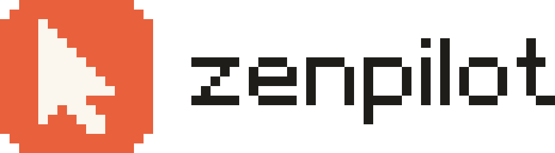

Alpha · macOS & Linux
Let Claude use your Zen browser.
Like Claude in Chrome, but for Zen. Works with Claude Desktop and Claude Code. No extension.

Install
Then ask Claude to do something in Zen.
You stay in charge
- Only sites you allow
- Stop button on every page
- Optional read-only mode
- Everything it does is logged
No cookies, passwords, downloads or custom JavaScript. Full docs.